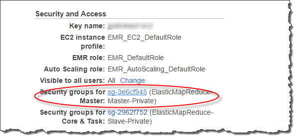

Amazon Redshift Spectrum 用の外部スキーマの作成
外部テーブルは、CREATE EXTERNAL SCHEMAステートメントを使用して作成した外部スキーマで作成する必要があります。
注記
一部のアプリケーションでは、データベースとスキーマという用語をほぼ同じ意味で使用しています。Amazon Redshift では、スキーマという用語を使用します。
Amazon Redshift 外部スキーマは、外部データカタログ内の外部データベースを参照します。Amazon Redshift の外部データベースは、Amazon Athena、AWS Glue Data Catalog、または Apache Hive メタストア (Amazon EMR など) で作成できます。Amazon Redshift で外部データベースを作成すると、データベースは Athena データカタログに保存されます。Hive メタストアでデータベースを作成するには、Hive アプリケーションでデータベースを作成する必要があります。
Amazon Redshift には、ユーザーに代わって Athena のデータカタログや Amazon S3 のデータファイルにアクセスするための認証が必要です。この認証を提供するため、最初に AWS Identity and Access Management (IAM) ロールを作成します。その後、ロールをクラスターにアタッチし Amazon Redshift CREATE EXTERNAL SCHEMA ステートメントのロール用に Amazon リソースネーム (ARN) を提供します。 認証の詳細については、「Amazon Redshift Spectrum 用の IAM ポリシー」を参照してください。
注記
現在、Athena データカタログに Redshift Spectrum 外部テーブルがある場合は、Athena データカタログを AWS Glue データカタログに移行することが可能です。Redshift Spectrum で AWS Glue データカタログを使用するには、IAM ポリシーの変更が必要になる場合があります。詳細については、Amazon Athena ユーザーガイドの「AWS Glue データカタログへのアップグレード」を参照してください。
外部スキーマの作成と同時に外部データベースを作成するには、FROM DATA CATALOGステートメントで CREATE EXTERNAL DATABASE を指定して CREATE EXTERNAL SCHEMA 句を含めます。
次の例では、外部データベース spectrum_schema を使用して spectrum_db という名前の外部スキーマを作成します。
create external schema spectrum_schema from data catalog database 'spectrum_db' iam_role 'arn:aws:iam::123456789012:role/MySpectrumRole' create external database if not exists;
Athena を使用してデータカタログを管理する場合は、Athena データベース名と Athena データカタログが置かれている AWS リージョンを指定します。
次の例では、Athena データカタログにあるデフォルトの sampledb データベースを使用して外部スキーマを作成します。
create external schema athena_schema from data catalog database 'sampledb' iam_role 'arn:aws:iam::123456789012:role/MySpectrumRole' region 'us-east-2';
注記
region パラメータは、Amazon S3 のデータファイルの場所ではなく、Athena データカタログが置かれている AWS リージョンを参照します。
Amazon EMR などの Hive メタストアを使用してデータカタログを管理する場合、セキュリティグループはクラスター間でトラフィックを許可するように設定する必要があります。
CREATE EXTERNAL SCHEMA ステートメントで、FROM HIVE METASTOREを指定し、メタストアの URI とポート番号を含めます。次の例では、hive_dbという名前の Hive メタストアデータベースを使って外部スキーマを作成します。
create external schema hive_schema from hive metastore database 'hive_db' uri '172.10.10.10' port 99 iam_role 'arn:aws:iam::123456789012:role/MySpectrumRole'
クラスターの外部スキーマを表示するには、PG_EXTERNAL_SCHEMA カタログテーブル、あるいは SVV_EXTERNAL_SCHEMAS ビューのクエリを実行します。次の例では、PG_EXTERNAL_SCHEMA と PG_NAMESPACE を結合する SVV_EXTERNAL_SCHEMAS クエリを実行します。
select * from svv_external_schemas
完全なコマンドの構文と例については、「CREATE EXTERNAL SCHEMA」を参照してください。
Amazon Redshift Spectrum での外部カタログの使用
Amazon Redshift Spectrum データベースと外部データテーブルのメタデータは、外部データカタログに保存されます。デフォルトでは、Redshift Spectrum メタデータは Athena データカタログに保存されます。Redshift Spectrum のデータベースとテーブルは、Athena コンソールで表示して管理できます。
Hive データ定義言語 (DDL)、Athena、または Hive メタストア (Amazon EMR など) を使用して、外部データベースと外部テーブルを作成および管理することもできます。
注記
Amazon Redshift を使用して Redshift Spectrum 外部データベースと外部テーブルを作成および管理することをおすすめします。
Athena および AWS Glue の Redshift Spectrum データベースの表示
外部データベースは、CREATE EXTERNAL SCHEMA ステートメントの一環として CREATE EXTERNAL DATABASE IF NOT EXISTS 句を含めることで作成できます。このケースでは、外部データベースのメタデータは、 データカタログに保存されます。作成した外部テーブルのメタデータも、外部スキーマに修飾され、 データカタログに保存されます。
Athena および AWS Glue は、サポートされる各 AWS リージョン リージョン用にデータカタログを保持します。テーブルのメタデータを表示するには、Athena または AWS Glue コンソールにログオンします。Athena で、データソース、ユーザーの AWS Glue を選択し、データベースの詳細を表示します。AWS Glue で、データベース、ユーザーの外部データベースを選択し、データベースの詳細を表示します。
Athena を使用して外部テーブルを作成および管理する場合は、CREATE EXTERNAL SCHEMA を使用してデータベースを登録します。例えば、次のコマンドは sampledb という名前の Athena データベースを登録します。
create external schema athena_sample from data catalog database 'sampledb' iam_role 'arn:aws:iam::123456789012:role/mySpectrumRole' region 'us-east-1';
SVV_EXTERNAL_TABLES システムビューにクエリを実行すると、Athena sampledb データベースにテーブルが表示され、Amazon Redshift で作成したテーブルも表示されます。
select * from svv_external_tables;
schemaname | tablename | location --------------+------------------+-------------------------------------------------------- athena_sample | elb_logs | s3://athena-examples/elb/plaintext athena_sample | lineitem_1t_csv | s3://myspectrum/tpch/1000/lineitem_csv athena_sample | lineitem_1t_part | s3://myspectrum/tpch/1000/lineitem_partition spectrum | sales | s3://redshift-downloads/tickit/spectrum/sales spectrum | sales_part | s3://redshift-downloads/tickit/spectrum/sales_part
Apache Hive メタストアデータベースの登録
Apache Hive メタストアで外部テーブルを作成すると、CREATE EXTERNAL SCHEMA を使用してこれらのテーブルを Redshift Spectrum に登録できます。
CREATE EXTERNAL SCHEMA ステートメントで FROM HIVE METASTORE 句を指定し、Hive メタストア URI とポート番号を指定します。IAM ロールには Amazon S3 への許可が必要ですが、Athena 許可は必要ありません。次の例では、Hive メタストアを登録します。
create external schema if not exists hive_schema from hive metastore database 'hive_database' uri 'ip-10-0-111-111.us-west-2.compute.internal' port 9083 iam_role 'arn:aws:iam::123456789012:role/mySpectrumRole';
Amazon Redshift クラスターが Amazon EMR クラスターへのアクセスを有効にする
Hive メタストアが Amazon EMR にある場合、Amazon Redshift クラスターに Amazon EMR クラスターへのアクセスを許可する必要があります。これを実行するには、Amazon EC2 セキュリティグループを作成します。そのためには、セキュリティグループを作成し、Amazon Redshift クラスターのセキュリティグループや Amazon EMR クラスターのセキュリティグループから EC2 セキュリティグループへのすべてのインバウンドトラフィックを許可します。その後、Amazon Redshift クラスターと Amazon EMR クラスターの両方に EC2 セキュリティを追加します。
Amazon Redshift クラスターのセキュリティグループ名を表示する
セキュリティグループを表示するには、以下を実行します。
-
AWS Management Console にサインインして https://console.aws.amazon.com/redshift/
で Amazon Redshift コンソールを開きます。 -
ナビゲーションメニューで [Clusters] (クラスター) を選択し、リストからクラスターを選択してその詳細を開きます。
-
[プロパティ] をクリックし、[ネットワークとセキュリティの設定] セクションを開きます。
-
[VPC セキュリティグループ] から自分のセキュリティグループ見つけ、それを書き留めます。
Amazon EMR のマスターノードセキュリティグループ名を表示する
Amazon EMR クラスターを開きます。詳細については、Amazon EMR 管理ガイドの「セキュリティ構成を使用してクラスターのセキュリティを設定する」を参照してください。
[Security and access] (セキュリティとアクセス) で、Amazon EMR のマスターノードセキュリティグループ名を書き留めます。

Amazon Redshift と Amazon EMR 間の接続を許可するために、Amazon EC2 セキュリティグループを作成または変更するには
Amazon EC2 ダッシュボードで [セキュリティグループ)] をクリックします。詳細については、Amazon EC2 Linux インスタンス用ユーザーガイドの「セキュリティグループルール」を参照してください。
[Create Security Group] を選択します。
VPC を使用する場合、Amazon Redshift と Amazon EMR のクラスターが存在する VPC を選択します。
インバウンドルールを追加します。
[タイプ] で [カスタム TCP] を選択します。
[ソース] で [カスタム] を選択します。
Amazon Redshift セキュリティグループの名前を入力します。
別のインバウンドルールを追加します。
[タイプ] で [TCP] を選択します。
[Port Range (ポート範囲)] に、「9083」と入力します。
注記
EMR HMS のデフォルトのポートは 9083 です。HMS が別のポートを使用する場合、そのポートをインバウンドルールと外部スキーマ定義に指定します。
[ソース] で [カスタム] を選択します。
セキュリティグループの名前と説明を入力します。
[Create Security Group] を選択します。
前のステップで作成した Amazon EC2 セキュリティグループを Amazon Redshift クラスターに追加するには
Amazon Redshift で、クラスターを選択します。
[プロパティ] を選択します。
[Network and security settings] (ネットワークとセキュリティ設定) を表示して、[Edit] (編集) をクリックします。
[VPC セキュリティグループ] で、新しいセキュリティグループ名を選択します。
[Save changes] (変更の保存) をクリックします。
Amazon EMR クラスターに Amazon EC2 セキュリティグループを追加するには
Amazon EMR で、クラスターを選択します。詳細については、Amazon EMR 管理ガイドの「セキュリティ構成を使用してクラスターのセキュリティを設定する」を参照してください。
[ハードウェア] でマスターノードのリンクを選択します。
[EC2 インスタンス ID] 列からリンクを選択します。

[アクション]、[セキュリティ]、[セキュリティグループを変更] の順にクリックします。
[Associated sercurity groups] (関連付けられたセキュリティグループ) で、新しいセキュリティグループを選択してから [Add security group] (セキュリティグループを追加) をクリックします。
[Save (保存)] を選択します。